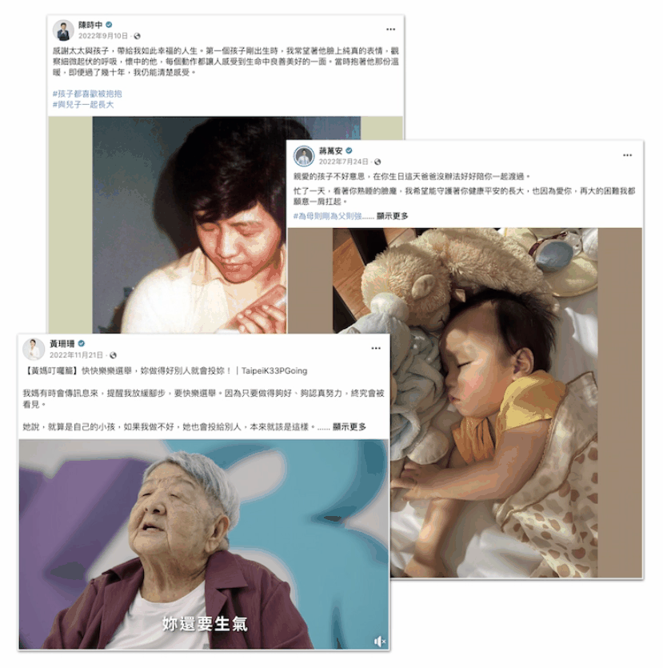

This article is written in Chinese.
2023.01.22 · 數據圖表 · 數位敘事
北市長三腳督激戰——三黨候選人Facebook 社群操作解析
2022九合一大選中，臺北市再次上演「三腳督」對戰，國民黨籍候選人蔣萬安、民進黨籍候選人陳時中、無黨籍候選人黃珊珊角逐市長大位。競選過程中候選人使出渾身解術，除了實體的政治造勢外，也積極嘗試透過社群平台推播，特別是臉書與 instagram，宣揚自己的政見與理念，期望獲得民眾的支持與選票。我們分析7月10日至11月25日三位候選人在臉書的所有貼文，看看候選人如何宣揚理念，網民與同黨政治人物如何聲援候選人。
本篇是【社會科學程式設計】課程團體期末報告，並非個人獨立完成，新聞所上的好友王薇、何汶也參與期末寫作與分析。 本文擷取部分報告結果，完成此文。
2022九合一大選中，臺北市再次上演「三腳督」對戰，國民黨籍候選人蔣萬安、民進黨籍候選人陳時中、無黨籍候選人黃珊珊角逐市長大位。競選過程中候選人使出渾身解術，除了實體的政治造勢外，也積極嘗試透過社群平台推播，特別是臉書與 instagram，宣揚自己的政見與理念，期望獲得民眾的支持與選票。我們分析7月10日至11月25日三位候選人在臉書的所有貼文，看看候選人如何宣揚理念，網民與同黨政治人物如何聲援候選人。
雖黃珊珊有著時任台北市長柯文哲的支持，然而最終仍舊無法擺脫藍綠夾攻，最終蔣萬安以57萬票當選台北市長。
然而，臉書社群聲量並非如此。若以按讚數為例，民進黨陳時中幾乎所有時段都高過其他候選人。
（其中，一開始陳時中的高峰可能起因於陳時中於2022年7月10日才創立粉絲專頁，因此可能是為使候選人頁面曝光增加的社群操作所致。）
貼文按讚數統計

貼文留言數統計

貼文分享數統計

細緻的看社群聲量高峰的貼文會發現，最高的幾則貼文都與親情有關。陳時中寫太太與兒子、蔣萬安寫小孩、黃珊珊寫老母親，主打「親情牌」皆是聲量最高的貼文。

貼文內容部分，組員透過非監督式學習 K-means 演算法，區分出在這段時間內三位候選人的貼文中主要提出的幾個主題。
其中發現，陳時中貼文內容以「市民生活品質」、「市場掃街」、「正副總統相關」、「市政、交通政策」、「疫情相關」、「18歲公民權」等為主，其中「疫情相關」、「18歲公民權」或為此次陳時中面對攻防與社群操作的重要議題。過去陳時中擔任 COVID-19 疫情期間的防疫指揮官，無論是疫苗與疫情政策都因此被放大檢視；而「18歲公民權」公民複決投票則為民進黨主力經營的選戰主題之一。
蔣萬安的貼文則以「國家、政黨、國族意識」、「市場掃街」、「寵物友善政策」、「疫情相關」，其中疫情多為質疑對方政營政策，或主張疫情政策為主；國家、國族意識部分，則可以看到貼文當中多見「中華民國、民主、城市等字眼」。
黃珊珊的貼文則以「市民生活品質」、「疫情相關」、「城市規劃」等為主，除了延續前朝政策，宣揚過去政績外，也更強調市民生活品質與城市規劃為施政核心。
而三位候選人的貼文當中也都可以看到各種掃街、拜票直播，企圖與網民互動。
社群網絡分析
此外，我們也好奇候選人粉專中的網民如何互動，透過 facebook-scraper 套件我們可以爬梳出最相關的前三十則主要留言與數則留言之下的回覆，並由組員接續進行網絡分析。我們發現，除了有許多來自各地的支持者外，我們發現也有特定粉絲專頁與政治人物會頻繁在貼文底下聲援候選人，這樣的聲援與互動也可能透過臉書演算法讓這些貼文更容易觸及到來自不同族群民眾的動態牆上。
陳時中社群網絡
（移動圖片上的點點，可以看到一些人的關聯唷！）
以陳時中為核心，我們看到有相當多的民進黨政治人物頻繁聲援陳時中貼文，且也有許多支持者創立粉絲專頁支持陳時中。
（註：這邊的側翼沒有貶義XD，單純是暫時以「側翼」解釋強力支持候選人粉專的用詞。）
蔣萬安社群網絡
（移動圖片上的點點，可以看到一些人的關聯唷！）
同樣的，以蔣萬安為核心，也有許多同黨政治人物聲援，也有其他支持者自成核心共同聲援蔣萬安。
黃珊珊社群網絡
缺乏政黨奧援的黃珊珊，多為支持者自成核心聲援黃珊珊，臺北市民眾黨籍政治人物也會頻繁聲援黃珊珊。
研究限制
本次以開源Python套件 facebook-scraper 爬取所有貼文與留言，並輔以個人帳號傳入 cookie 檔。 時間區段部分，陳時中於7月10日創立粉絲專頁，而九合一選舉則是於11月26日舉行。因為本研究的目的是觀察選舉期間的留言互動，因此選舉當天的資料不納入分析，最後資料範圍取自7月10日至11月25日。
此外，受限於 facebook-scraper 限制，僅能提取「最相關」留言的三十則與其回覆留言，並非完整留言資料。然而本研究旨在了解特定留言群眾趨向，當Facebook留言顯示「最相關」時，演算法影響留言排序，表示更有可能在留言頂端看到朋友的留言，或是已驗證的個人檔案或粉絲專頁發佈的留言，雖然一方面造成資料抓取不易，但也符合本研究意旨，更方便我們觀察前來聲援的政治人物（這些政治人物大多為已驗證帳戶_有藍勾勾）。